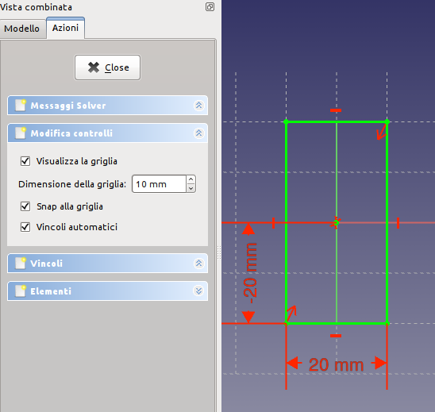

Documentazione di FreeCAD
Ambiente Sketcher
Questo è la guida ai comandi di FreeCAD. Comprende le pagine del Wiki della documentazione di FreeCAD che si riferiscono ai comandi. Questa versione è stata creata principalmente per essere stampata come un unico grande documento o per consentire una panoramica veloce sulle pagine dei comandi. Se si sta leggendo questo online, si consiglia di andare direttamente alla Guida in linea, che è più facile da esplorare.
- Parte prima: Ambiente Sketcher
- Parte seconda: Ambiente Sketcher: Strumenti di costruzione delle geometrie
- Parte terza: Ambiente Sketcher: I vincoli
- Parte quarta: Ambiente Sketcher: Gestione degli schizzi
- Parte quinta: Ambiente Sketcher: Altri strumenti e strumenti non documentati

L'ambiente  Sketcher serve a creare delle geometrie 2D destinate ad essere utilizzate nel modulo PartDesign per produrre oggetti Parte o in altri moduli, come ad esempio in Architettura.
Sketcher serve a creare delle geometrie 2D destinate ad essere utilizzate nel modulo PartDesign per produrre oggetti Parte o in altri moduli, come ad esempio in Architettura.
In genere, una geometria 2D è il punto di partenza per la maggior parte dei modelli CAD. Un semplice schizzo 2D può essere estruso per creare una forma 3D; altri schizzi 2D possono essere usati per creare delle tasche in questa forma e ulteriori schizzi possono essere utilizzati per definire delle estrusioni sulla superficie dell'oggetto 3D.
Assieme alle Operazioni booleane lo schizzo costituisce la base per generare il progetto di una forma solida.
L'ambiente Sketcher mette a disposizione i vincoli. Consente di vincolare le forme 2D a precise definizioni geometriche.
Un solutore dei vincoli calcola la quantità di vincoli applicati alla geometria 2D e permette l'esplorazione interattiva dei gradi di libertà dello schizzo.
Un buon esempio di utilizzo dello schizzo si trova nel forum francese in: Patte à l'aide du sketcher, Création d'une cavité dans la Patte. In italiano, nella sezione Esercitazioni, è descritto uno schizzo vincolato.
Contents
- 1 Documentazione di FreeCAD
- 1.1 Ambiente Sketcher
- 1.2 Ambiente Sketcher: Strumenti di costruzione delle geometrie
- 1.3 Descrizione
- 1.4 Utilizzo
- 1.5 Opzioni
- 1.6 Limitazioni
- 1.7
- 1.8
- 1.9
- 1.10
- 1.11
- 1.12
- 1.13
- 1.14
- 1.15 Descrizione
- 1.16 Utilizzo
- 1.17 Esempio
- 1.18
- 1.19
- 1.20 Ambiente Sketcher: I vincoli
- 1.21
- 1.22 Descrizione
- 1.23 Utilizzo
- 1.24 Script
- 1.25
- 1.26 Descrizione
- 1.27 Uso
- 1.28 Script
- 1.29
- 1.30
- 1.31
- 1.32
- 1.33
- 1.34
- 1.35
- 1.36
- 1.37 Descrizione
- 1.38 Uso
- 1.39 Script
- 1.40
- 1.41 Descrizione
- 1.42 Uso
- 1.43 Modalità di vincolo
- 1.44 Script
- 1.45
- 1.46 Descrizione
- 1.47 Uso
- 1.48 Script
- 1.49
- 1.50
- 1.51
- 1.52 Ambiente Sketcher: Gestione degli schizzi
- 1.53
- 1.54
- 1.55 Utilizzo
- 1.56 Uso per riparare un modello rovinato
- 1.57
- 1.58
- 1.59
- 1.60 Ambiente Sketcher: Altri strumenti e strumenti non documentati
- 1.61
Nozioni di base sugli schizzi vincolati
Per spiegare come funziona il modulo Sketcher, è utile fare un confronto con il modo tradizionale di disegnare.
Disegno tradizionale
Il modo tradizionale di disegno CAD è derivato dal vecchio tavolo da disegno.
Le viste ortogonali 2D sono disegnate manualmente e finalizzate alla produzione di disegni tecnici (noti anche come dettagli o particolari). Gli oggetti sono disegnati esattamente con le loro forme, misure o dimensioni previste. Per tracciare una linea orizzontale lunga 100 mm a partire dal punto (0,0), si attiva lo strumento linea, si fa clic sullo schermo o si inserisce le coordinate (0,0) per il primo punto, poi si fa un secondo clic o si inserisce il secondo punto di coordinate (100,0). Oppure, si costruisce una linea base senza riguardo alla sua posizione e in seguito la si sposta. Dopo aver disegnato le geometrie si aggiungono le dimensioni.
Schizzo vincolato
Lo strumento Sketcher si allontana da questa logica. Non è più necessario disegnare gli oggetti esattamente come sono desiderati, perché è possibile ridefinirli in seguito tramite i vincoli. È possibile disegnare liberamente gli oggetti e dopo, fintanto che non vengono vincolati, modificarli. Sostanzialmente, essi sono flottanti, quindi si possono spostare, allungare, scalare, e così via. Questo permette una grande flessibilità nel processo di progettazione.
Cosa sono i vincoli?
Invece delle dimensioni, i vincoli vengono utilizzati per limitare i gradi di libertà di un oggetto. Ad esempio, una linea senza vincoli ha 4 gradi di libertà (DOF Degrees Of Freedom): essa può essere spostata orizzontalmente o verticalmente, può essere allungata, e può essere ruotata.
Applicando a una linea un vincolo orizzontale o verticale, oppure un vincolo angolare (rispetto ad un'altra linea o ad uno degli assi) si limita la sua capacità di ruotare, lasciandola quindi con solo 2 gradi di libertà. Bloccando uno dei suoi punti rispetto all'origine si rimuove un ulteriore grado di libertà. Applicando un vincolo dimensionale si rimuove l'ultimo grado di libertà. A questo punto, la linea è quindi considerata completamente vincolata.
Più oggetti possono essere vincolati tra di loro. Due linee possono essere unite attraverso uno dei loro punti con il vincolo punto coincidente. Tra due linee si può impostare un angolo, oppure impostarle perpendicolari. Una linea può essere tangente ad un arco o a un cerchio, e così via. Per vincolare uno schizzo complesso, con più oggetti, sono possibili diverse soluzioni, e renderlo completamente vincolato significa che almeno una di queste è stato raggiunta in base ai vincoli applicati.
Ci sono due tipi di vincoli: geometrici e dimensionali. Essi sono descritti nella successiva sezione dedicata agli strumenti.
I vincoli sono controllati dal solutore
Uso corretto dell'ambiente Sketcher
Il modulo Sketcher non è pensato per produrre disegni dettagliati in 2D.
Dopo che gli schizzi sono stati utilizzati per generare una forma solida vengono automaticamente nascosti. I vincoli (la quotatura dei vincoli e i segni grafici di vincolo) sono visibili solo in modalità Modifica sketch.
Se serve solo produrre delle viste 2D per la stampa e non si intende creare dei modelli 3D, si può utilizzare l'ambiente Draft che permette anche di creare delle geometrie 2D non ancora disponibili in Sketcher, come le B-Spline o i Poligoni.
Sketching Workflow
Uno Sketch è sempre in 2 dimensioni (2D). Per creare un solido, viene creato prima lo schizzo 2D di una singola area chiusa e poi essa viene estrusa o rivoluzionata per aggiungere la terza dimensione, creando un solido 3D dallo schizzo 2D.
Se lo schizzo contiene dei segmenti che si intersecano, punti non collocati esattamente su un segmento, o punti finali di segmenti adiacenti che non sono coincidenti, l'operazione di Pad o di Rivoluzione non crea un solido. Come eccezione, questa regola non si applica alla geometria di costruzione (linee blu).
All'interno dell'area racchiusa si possono avere delle piccole aree non sovrapposte. Queste diverranno dei "vuoti" quando si crea il solido 3D.
Gli strumenti
Gli strumenti dell'Ambiente Sketcher si trovano nel menu che appare quando si carica questo ambiente.
Geometria dello schizzo
Gli strumenti per creare gli oggetti.
-
 Punto: Disegna un punto.
Punto: Disegna un punto. -
 Linea tra due punti: Disegna un segmento delimitato da due punti.
Linea tra due punti: Disegna un segmento delimitato da due punti. -
 Arco: Disegna un arco di circonferenza specificando il centro, il raggio, l'angolo iniziale e l'angolo finale.
Arco: Disegna un arco di circonferenza specificando il centro, il raggio, l'angolo iniziale e l'angolo finale. -
 Arco da tre punti: Disegna un arco da due punti finali e un punto della circonferenza.
Arco da tre punti: Disegna un arco da due punti finali e un punto della circonferenza. - Circonferenza: Disegna una circonferenza prendendo in input il centro e il raggio.
-
 Circonferenza da tre punti : Disegna un cerchio da tre punti sulla circonferenza.
Circonferenza da tre punti : Disegna un cerchio da tre punti sulla circonferenza. -
 Sezioni di coni:
Sezioni di coni:
-
 Ellisse dal centro : Disegna un'ellisse dal centro, raggio maggiore e raggio minore.
Ellisse dal centro : Disegna un'ellisse dal centro, raggio maggiore e raggio minore. -
 Ellisse da tre punti : Disegna una ellisse da due punti del raggio maggiore) e un punto del raggio minore.
Ellisse da tre punti : Disegna una ellisse da due punti del raggio maggiore) e un punto del raggio minore. -
 Arco di ellisse : Disegna un arco di ellisse dal punto centrale, un punto del raggio maggiore, il punto iniziale e il punto finale.
Arco di ellisse : Disegna un arco di ellisse dal punto centrale, un punto del raggio maggiore, il punto iniziale e il punto finale.  Arco di iperbole: Disegna un arco di iperbole. (v0.17)
Arco di iperbole: Disegna un arco di iperbole. (v0.17) Arco di parabola: Disegna un arco di parabola. (v0.17)
Arco di parabola: Disegna un arco di parabola. (v0.17)
-
-
 Polilinea : Disegna una linea composta da segmenti definiti da punti.
Polilinea : Disegna una linea composta da segmenti definiti da punti. - Rettangolo: Disegna un rettangolo specificando gli angoli opposti.
-
 Triangolo equilatero: Disegna un triangolo equilatero inscritto in una circonferenza di costruzione.
Triangolo equilatero: Disegna un triangolo equilatero inscritto in una circonferenza di costruzione. -
 Quadrato: Disegna un quadrato inscritto in una circonferenza di costruzione.
Quadrato: Disegna un quadrato inscritto in una circonferenza di costruzione. -
 Pentagono: Disegna un pentagono inscritto in una circonferenza di costruzione.
Pentagono: Disegna un pentagono inscritto in una circonferenza di costruzione. -
 Esagono: Disegna un esagono inscritto in una circonferenza di costruzione.
Esagono: Disegna un esagono inscritto in una circonferenza di costruzione. -
 Ettagono: Disegna un ettagono inscritto in una circonferenza di costruzione.
Ettagono: Disegna un ettagono inscritto in una circonferenza di costruzione. -
 Ottagono: Disegna un ottagono inscritto in una circonferenza di costruzione.
Ottagono: Disegna un ottagono inscritto in una circonferenza di costruzione. -
 Asola: Disegna un rettangolo con due lati opposti raccordati con un semicerchio, un'asola.
Asola: Disegna un rettangolo con due lati opposti raccordati con un semicerchio, un'asola. -
 Raccorda: Raccorda due linee unite in un punto. Selezionare entrambe le linee o fare clic sul punto di angolo, poi attivare lo strumento.
Raccorda: Raccorda due linee unite in un punto. Selezionare entrambe le linee o fare clic sul punto di angolo, poi attivare lo strumento. -
 Rifila: Accorcia una linea, un cerchio o un arco fino al primo nodo, punto di intersezione.
Rifila: Accorcia una linea, un cerchio o un arco fino al primo nodo, punto di intersezione. -
 Geometria esterna: Crea un segmento collegato a una geometria esterna.
Geometria esterna: Crea un segmento collegato a una geometria esterna. -
 Linea di costruzione: Commuta un elemento in modalità Costruzione. L'oggetto selezionato e impostato come elemento di costruzione non sarà utilizzato in un'operazione di geometria 3D (es una linea di costruzione). Fino alla versione 0.15. Questa è l'icona che è stata utilizzata fino alla v0.15. Fino a FreeCAD v0.16 l'utente doveva creare prima una regolare geometria di Sketchup (bianca) e quindi utilizzare questo strumento per modificarla in geometria di costruzione (blu).
Linea di costruzione: Commuta un elemento in modalità Costruzione. L'oggetto selezionato e impostato come elemento di costruzione non sarà utilizzato in un'operazione di geometria 3D (es una linea di costruzione). Fino alla versione 0.15. Questa è l'icona che è stata utilizzata fino alla v0.15. Fino a FreeCAD v0.16 l'utente doveva creare prima una regolare geometria di Sketchup (bianca) e quindi utilizzare questo strumento per modificarla in geometria di costruzione (blu). -
 Costruzione: Commuta un elemento selezionato o l'intera barra delle geometrie in modalità Costruzione. Introdotto dalla versione 0.16. In FreeCAD v0.16 è stato aggiunta la capacità di creare la geometria direttamente in modalità di costruzione, e quindi l'icona è stata cambiata in questa. Selezionando una geometria di Sketcher esistente e facendo clic su questo strumento si commuta la geometria tra la modalità normale e di costruzione proprio come nelle versioni precedenti di FreeCAD. A partire da FreeCAD v0.16, selezionando questo strumento quando non è selezionata alcuna geometria Sketcher cambia la modalità (da normale a geometria di costruzione) in cui verranno creati gli oggetti futuri.
Costruzione: Commuta un elemento selezionato o l'intera barra delle geometrie in modalità Costruzione. Introdotto dalla versione 0.16. In FreeCAD v0.16 è stato aggiunta la capacità di creare la geometria direttamente in modalità di costruzione, e quindi l'icona è stata cambiata in questa. Selezionando una geometria di Sketcher esistente e facendo clic su questo strumento si commuta la geometria tra la modalità normale e di costruzione proprio come nelle versioni precedenti di FreeCAD. A partire da FreeCAD v0.16, selezionando questo strumento quando non è selezionata alcuna geometria Sketcher cambia la modalità (da normale a geometria di costruzione) in cui verranno creati gli oggetti futuri.
Vincoli dello schizzo
I vincoli sono utilizzati per stabilire le relazioni tra gli elementi del disegno, e per bloccare il disegno lungo l'asse verticale e l'asse orizzontale. Alcuni vincoli richiedono dei Vincoli di supporto.
Vincoli non associati a valori numerici
-
 Coincidente: Crea un vincolo di coincidenza (punto-con-punto) tra due punti selezionati.
Coincidente: Crea un vincolo di coincidenza (punto-con-punto) tra due punti selezionati. -
 Punto su oggetto: Crea un vincolo (fissa) un punto-su-un-oggetto sull'elemento selezionato.
Punto su oggetto: Crea un vincolo (fissa) un punto-su-un-oggetto sull'elemento selezionato. -
 Verticale: Crea un vincolo verticale per le linee o le polilinee selezionate. Si può selezionare più oggetti.
Verticale: Crea un vincolo verticale per le linee o le polilinee selezionate. Si può selezionare più oggetti. -
 Orizzontale: Crea un vincolo orizzontale per le linee o le polilinee selezionate. Si può selezionare più oggetti.
Orizzontale: Crea un vincolo orizzontale per le linee o le polilinee selezionate. Si può selezionare più oggetti. -
 Parallela: Crea un vincolo di parallelismo tra due linee selezionate.
Parallela: Crea un vincolo di parallelismo tra due linee selezionate. -
 Perpendicolare: Crea un vincolo di perpendicolarità tra due linee selezionate.
Perpendicolare: Crea un vincolo di perpendicolarità tra due linee selezionate. -
 Tangente: Crea un vincolo di tangenza tra due entità selezionate, o un vincolo collineare tra due segmenti di linea.
Tangente: Crea un vincolo di tangenza tra due entità selezionate, o un vincolo collineare tra due segmenti di linea. -
 Uguaglianza: Crea un vincolo di uguaglianza tra due entità selezionate. Se usato su cerchio o archi, il raggio viene posto uguale.
Uguaglianza: Crea un vincolo di uguaglianza tra due entità selezionate. Se usato su cerchio o archi, il raggio viene posto uguale. -
 Simmetria: Crea un vincolo simmetrica tra 2 punti rispetto a una linea.
Simmetria: Crea un vincolo simmetrica tra 2 punti rispetto a una linea. -
 Fissa: v 0.17 Consente di fissare un elemento geometrico in una data posizione applicando un singolo vincolo. Dovrebbe essere particolarmente utile per lavorare con le B-Splines. Vedere https://forum.freecadweb.org/viewtopic.php?f=9&t=26572
Fissa: v 0.17 Consente di fissare un elemento geometrico in una data posizione applicando un singolo vincolo. Dovrebbe essere particolarmente utile per lavorare con le B-Splines. Vedere https://forum.freecadweb.org/viewtopic.php?f=9&t=26572
Vincoli associati a dati
Per questi vincoli si possono usare le espressioni. I dati possono essere prelevati da un foglio di calcolo.
Le icone blu di questi vincoli si riferiscono alle funzioni introdotte nella versione 0.16 di FreeCAD, attivabili con Commuta vincoli.
-

 Bloccato: Crea un vincolo che blocca l'elemento selezionato fissando le sue dimensioni verticali e orizzontali rispetto all'origine (le dimensioni si possono modificare in seguito).
Bloccato: Crea un vincolo che blocca l'elemento selezionato fissando le sue dimensioni verticali e orizzontali rispetto all'origine (le dimensioni si possono modificare in seguito). -

 Distanza orizzontale: Fissa la distanza orizzontale tra 2 punti o tra gli estremi di una linea. Se viene selezionato un solo elemento, la distanza viene impostata a partire dall'origine.
Distanza orizzontale: Fissa la distanza orizzontale tra 2 punti o tra gli estremi di una linea. Se viene selezionato un solo elemento, la distanza viene impostata a partire dall'origine. -
 Distanza verticale: Fissa la distanza verticale tra 2 punti o tra gli estremi di una linea. Se viene selezionato un solo elemento, la distanza viene impostata a partire dall'origine.
Distanza verticale: Fissa la distanza verticale tra 2 punti o tra gli estremi di una linea. Se viene selezionato un solo elemento, la distanza viene impostata a partire dall'origine. -

 Lunghezza: Vincola la lunghezza di una linea selezionata.
Lunghezza: Vincola la lunghezza di una linea selezionata. -

 Raggio: Vincola il raggio di un arco o un cerchio selezionato.
Raggio: Vincola il raggio di un arco o un cerchio selezionato. -

 Angolo interno: Fissa l'angolo interno tra due linee selezionate (o l'inclinazione di una linea).
Angolo interno: Fissa l'angolo interno tra due linee selezionate (o l'inclinazione di una linea). -

 Rifrazione: Crea un vincolo di rifrazione tra due linee per simulare secondo la Legge di Snell un raggio di luce che attraversa un'interfaccia.
Rifrazione: Crea un vincolo di rifrazione tra due linee per simulare secondo la Legge di Snell un raggio di luce che attraversa un'interfaccia. -
 Allineamento interno: Allinea gli elementi selezionati alla forma selezionata, ad esempio una linea da convertire in asse maggiore di una ellisse.
Allineamento interno: Allinea gli elementi selezionati alla forma selezionata, ad esempio una linea da convertire in asse maggiore di una ellisse.
-
 Commuta vincoli: Commuta una serie di vincoli, quelli associati a un valore numerico, da Decisivi a Indicatori e viceversa. Introdotto dalla versione 0.16
Commuta vincoli: Commuta una serie di vincoli, quelli associati a un valore numerico, da Decisivi a Indicatori e viceversa. Introdotto dalla versione 0.16
Non ancora attivati
- Concentrico
-
 Angolo esterno
Angolo esterno -
 Punto alla fine
Punto alla fine - Punto in centro
-
 Punto all'inizio
Punto all'inizio -
 Punto su oggetto
Punto su oggetto -
 Tangente alla fine
Tangente alla fine -
 Tangente all'inizio
Tangente all'inizio
Altro
-
 Nuovo schizzo: Crea un nuovo schizzo su una faccia selezionata o in un piano. Se non si esegue nessuna selezione, di default, viene utilizzato il piano XY.
Nuovo schizzo: Crea un nuovo schizzo su una faccia selezionata o in un piano. Se non si esegue nessuna selezione, di default, viene utilizzato il piano XY. -
 Edita schizzo: Modifica lo schizzo selezionato.
Edita schizzo: Modifica lo schizzo selezionato. -
 Esci: Termina la modalità di modifica dello schizzo.
Esci: Termina la modalità di modifica dello schizzo. -
 Vista schizzo: Imposta la vista del modello in modo perpendicolare al piano dello schizzo.
Vista schizzo: Imposta la vista del modello in modo perpendicolare al piano dello schizzo. -
 Mappa schizzo su faccia: Mappa uno schizzo sulla faccia di un solido selezionata in precedenza.
Mappa schizzo su faccia: Mappa uno schizzo sulla faccia di un solido selezionata in precedenza. - Riposiziona schizzo: Permette di modificare la posizione di uno schizzo
- Convalida lo schizzo: Permette di controllare se nell'area di tolleranza ci sono dei punti distinti e di farli coincidere.
-
 Unisci schizzi: Unisce due o più schizzi.
Unisci schizzi: Unisce due o più schizzi. -
 Rifletti schizzo: Riflette uno schizzo rispetto all'asse verticale, o all'asse orizzontale e all'origine.
Rifletti schizzo: Riflette uno schizzo rispetto all'asse verticale, o all'asse orizzontale e all'origine.
Strumenti dello Sketcher
-
 Chiudi Forma: Crea una forma chiusa applicando i vincoli di coincidenza ai punti finali.
Chiudi Forma: Crea una forma chiusa applicando i vincoli di coincidenza ai punti finali.
-
 Collega Segmenti: Collega gli elementi dello schizzo applicando i vincoli di coincidenza ai punti finali.
Collega Segmenti: Collega gli elementi dello schizzo applicando i vincoli di coincidenza ai punti finali.
-
 Seleziona Vincoli: Seleziona i vincoli di un elemento dello schizzo.
Seleziona Vincoli: Seleziona i vincoli di un elemento dello schizzo.
-
 Seleziona Origine: Seleziona l'origine di uno schizzo.
Seleziona Origine: Seleziona l'origine di uno schizzo.
- Seleziona Asse Y: Seleziona l'asse verticale di uno schizzo.
-
 Seleziona Asse X: Seleziona l'asse orizzontale di uno schizzo.
Seleziona Asse X: Seleziona l'asse orizzontale di uno schizzo.
-
 Seleziona i vincoli ridondanti: Seleziona i vincoli ridondanti di uno schizzo.
Seleziona i vincoli ridondanti: Seleziona i vincoli ridondanti di uno schizzo.
-
 Seleziona i vincoli in conflitto: Seleziona i vincoli in conflitto di uno schizzo.
Seleziona i vincoli in conflitto: Seleziona i vincoli in conflitto di uno schizzo.
-
 Seleziona gli elementi associati da vincoli: Evidenzia gli elementi dello schizzo associati ai vincoli selezionati.
Seleziona gli elementi associati da vincoli: Evidenzia gli elementi dello schizzo associati ai vincoli selezionati.
-
 Mostra/Nascondi la geometria interna: Ricrea la geometria interna mancante di un elemento selezionato, oppure la cancella se non serve, per ora è applicabile solo a ellissi.
Mostra/Nascondi la geometria interna: Ricrea la geometria interna mancante di un elemento selezionato, oppure la cancella se non serve, per ora è applicabile solo a ellissi.
-
 Simmetria: Copia un elemento dello schizzo in modo simmetrico rispetto ad una linea a scelta.
Simmetria: Copia un elemento dello schizzo in modo simmetrico rispetto ad una linea a scelta.
-
 Clona: Clona un elemento dello schizzo.
Clona: Clona un elemento dello schizzo.
-
 Copia: Copia un elemento dello schizzo.
Copia: Copia un elemento dello schizzo.
-
 Schiera lineare: Crea una schiera con gli elementi dello schizzo selezionati.
Schiera lineare: Crea una schiera con gli elementi dello schizzo selezionati.
- Cambia spazio virtuale: v 0.17 Permette di "nascondere" i vincoli e renderli nuovamente visibili. Vedere https://forum.freecadweb.org/viewtopic.php?f=9&t=26614
Preferenze
-
 Preferences...: Preferenze disponibili negli strumenti Sketcher.
Preferences...: Preferenze disponibili negli strumenti Sketcher.
Migliori pratiche
Ogni utente CAD, nel corso del tempo, sviluppa un proprio modo di lavorare, ma ci sono alcuni criteri generali che è utile seguire.
- Una serie di schizzi semplici è più facile da gestire rispetto a un unico schizzo molto complesso. Ad esempio, si può creare un primo schizzo per produrre (con una estrusione o una rivoluzione) la forma 3D di base, poi un secondo schizzo per eseguire i fori o le aperture (tasche). Alcuni dettagli possono essere omessi e realizzati in seguito come operazioni 3D. È possibile decidere di evitare gli smussi nel disegno, se ce ne sono troppi, e aggiungerli dopo come caratteristica 3D.
- Creare sempre un profilo chiuso altrimenti il disegno non produrrà un solido, bensì una serie di facce aperte. Quando si desidera escludere alcuni oggetti nella creazione del solido, trasformarli in elementi di costruzione con lo strumento Modalità costruzione.
- Utilizzare la funzione Vincoli automatici per ridurre il numero di vincoli da inserire manualmente.
- Come regola generale, si applicano prima i vincoli geometrici, poi i vincoli dimensionali, e infine si blocca il disegno. Da ricordare: le regole sono fatte per essere infrante. Quando ci sono difficoltà nel manipolare il disegno, può essere utile vincolare alcuni oggetti prima di completare il profilo.
- Se possibile, centrare il disegno nell'origine (0,0) con il vincolo Blocca. Se il disegno non è simmetrico, posizionare uno dei suoi punti nell'origine, o scegliere una cifra tonda semplice per le distanze di blocco. Nella versione v0.12, i vincoli esterni (vincoli rispetto a geometrie 3D esistenti come a bordi o altri schizzi) non sono ancora implementati. Questo significa che per collegare i disegni successivi alla geometria del primo schizzo, si devono impostare manualmente le distanze relative al primo disegno. Un vincolo di blocco (25,75) dall'origine è più facile da ricordare che (23.47,73.02).
- Se c'è la possibilità di scegliere tra il vincolo lunghezza e il vincolo distanza orizzontale
 o distanza verticale
o distanza verticale  , preferire questi ultimi. I vincoli di distanza orizzontale e verticale sono computazionalmente più economici.
, preferire questi ultimi. I vincoli di distanza orizzontale e verticale sono computazionalmente più economici. - In generale, i vincoli migliori da utilizzare sono: Orizzontale e Verticale, Lunghezza Orizzontale e Verticale, Tangente nel punto. Se possibile, limitare l'uso di questi vincoli: Lunghezza generica, Tangenza Edge-to-edge, Punto su linea; Simmetria.
Tutorial
Il solutore dei vincoli
I controlli dello schizzo
Quando viene avviato uno schizzo nella vista combinata si apre la finestra delle Azioni che è suddivisa in quattro parti.
|  |
La seconda parte della finestra permette di:
|
Il solutore dei vincoli - I conflitti

|
I messaggi del solver forniscono delle informazioni sullo stato dei vincoli applicati allo schizzo, riguardano i gradi di libertà dello schizzo e i tempi di risoluzione. Per vederli occorre espandere la sua casella. Per interpretare questi messaggi si deve espandere anche la casella Vincoli in cui sono elencati i vincoli attivi, catalogati secondo l'impostazione del filtro modificabile nella stessa scheda. Alcuni vincoli possono essere applicati automaticamente. Lo schizzo può risultare vuoto o sotto-vincolato, oppure può contenere dei vincoli ridondanti o dei vincoli in conflitto tra di loro. Il solutore individua i conflitti e propone delle soluzioni che di solito sono valide. Non fornisce suggerimenti per gli schizzi sotto-vincolati. Prima di utilizzare uno schizzo per operazioni di modellazione si devono risolvere tutti i conflitti e eliminare le ridondanze. Per ottenere risultati affidabili è bene produrre sempre degli schizzi completamente vincolati che, di default, sono visualizzati in verde. Il colore dello schizzo completamente vincolato può essere modificato in Modifica → Preferenze → Visualizzazione → Object Colors. È bene lavorare sempre con schizzi completamente vincolati, e per questo può essere utile la macro Shake Sketch che fornisce un aiuto per individuare gli elementi che sono ancora liberi. |
Gli elementi

|
L'ultima parte della finestra contiene l'elenco degli elementi che compongono lo schizzo, catalogati secondo il tipo. L'elemento selezionato nell'elenco viene evidenziato nella figura e viceversa. |
Convalida dello schizzo

|
Quando i punti finali di due linee sono molto vicini le linee possono apparire collegate tra di loro, ma di fatto non esserlo. Questa condizione è spesso la causa del fallimento di quelle operazioni che richiedono un contorno chiuso per essere valide. Lo strumento Validate Sketch si attiva dal menu Sketch e permette di verificare se ci sono dei punti molto vicini tra di loro, secondo la tolleranza impostata, che non coincidono e di farli coincidere. Inoltre, permette di verificare la presenza di vincoli non validi e altre azioni di controllo e correzione. |
Le Proprietà
A differenza di quello che succede in altri ambienti, dove è possibile intervenire su singoli componenti, nell'ambiente Sketcher le proprietà sono applicate in modo globale a tutto il disegno. Ad esempio, applicando una traslazione si sposta tutto lo schizzo. Le proprietà delle sue geometrie, quali vincoli e dimensioni, si possono cambiare solo in modalità Modifica sketch.
Proprietà
Vista combinata → Modello → Proprietà → Vista

|
Auto Constraints
Base
Grid
|
Vista combinata → Modello → Proprietà → Dati
|
2D
Sketch |
Ambiente Sketcher: Strumenti di costruzione delle geometrie
|
| Posizione nel menu |
|---|
| Sketch → Geometrie → Punto |
| Ambiente |
| Sketcher, PartDesign |
| Avvio veloce |
| Nessuno |
| Vedere anche |
| Nessuno |
Descrizione
Lo strumento Punto crea un punto nello schizzo corrente, il punto può essere utilizzato per la costruzione di elementi geometrici.
Il punto è sempre un elemento di costruzione e non viene visualizzato nella vista 3D.
Utilizzo
- Cliccare sul pulsante
 Crea un punto nello schizzo per attivare la funzione.
Crea un punto nello schizzo per attivare la funzione. - Posizionare il cursore nel punto desiderato e cliccare.
- Premere ESC o il tasto destro del mouse per uscire dalla funzione.
Opzioni
L'aggancio alla griglia può essere impostato nelle Preferenze di Sketcher. Il punto si aggancia quindi alla griglia, se ha una distanza dalla griglia inferiore al 25% rispetto a una linea della griglia. Il modo snap non blocca i punti sulla griglia. I punti possono essere spostati con il mouse o vincolandoli in altre posizioni.
Limitazioni
Il punto creato non è disponibile al di fuori dello schizzo. Nel caso in cui sia necessario un punto di riferimento nella vista 3D, utilizzare il Punto di riferimento di PartDesign o il Punto di Part.
|
| Posizione nel menu |
|---|
| Sketch → Geometrie → Arco dal centro |
| Ambiente |
| PartDesign, Sketcher |
| Avvio veloce |
| Nessuno |
| Vedere anche |
| Cerchio |
Disegna un arco dalla selezione di tre punti: il centro, l'angolo iniziale lungo (contemporaneamente) il raggio, e l'angolo finale.
Quando si avvia lo strumento, il puntatore del mouse assume la forma di croce bianca accompagnata dall'icona rossa di un arco. Accanto al puntatore sono visualizzate, in blu, le coordinate della sua posizione aggiornate in tempo reale.


- Avviare lo strumento
- selezionare il centro
- selezionare il punto iniziale, a una distanza dal centro che stabilisce il raggio
- selezionare il punto finale
- Per modificare l'arco attribuirgli dei vincoli e poi corregerli
- Selezionare i punti su un'area vuota della vista 3D, o su un oggetto esistente. I vincoli automatici (auto constraints) si attivano nella scheda Azioni → Modifica controlli → Autovincoli del pannello Vista combinata.
- Premere il tasto ESC per annullare l'operazione.
Cerchio |
| Posizione nel menu |
|---|
| Sketch → Geometrie → Cerchio |
| Ambiente |
| PartDesign, Sketcher |
| Avvio veloce |
| Nessuno |
| Vedere anche |
| Arco |
Disegna un cerchio dalla scelta di due punti: il centro, e un punto sulla circonferenza (il raggio).
Quando lo strumento è attivo, il puntatore del mouse assume la forma di croce bianca accompagnata dall'icona rossa di cerchio. Accanto al puntatore sono visualizzate, in blu, le coordinate della sua posizione aggiornate in tempo reale.

- Seleziona prima il centro, poi
- impostare il raggio
- Selezionare i punti su un'area vuota della vista 3D, o su un oggetto esistente. I vincoli automatici (auto constraints) si attivano nella scheda Azioni → Modifica controlli → Autovincoli del pannello Vista combinata.
- Premere il tasto ESC, o cliccare sul tasto destro del mouse, per annullare l'operazione.
|
| Posizione nel menu |
|---|
| Sketch → Geometrie → Linea |
| Ambiente |
| Sketcher, PartDesign |
| Avvio veloce |
| L |
| Vedere anche |
| Polilinea |
Disegna una segmento tra due punti selezionati nella vista 3D. Quando lo strumento è attivo, il puntatore del mouse assume la forma di croce bianca con l'icona linea rossa.
Accanto al puntatore sono visualizzate, in blu, le coordinate della sua posizione, aggiornate in tempo reale.
- Selezionare i punti su un'area vuota della vista 3D, o su un oggetto esistente. I vincoli automatici (auto constraints) si attivano nella scheda Azioni → Modifica controlli → Autovincoli del pannello Vista combinata.
- Premere il tasto ESC, o cliccare sul tasto destro del mouse, per annullare l'operazione.
|
| Posizione nel menu |
|---|
| Sketch → Geometrie → Polilinea |
| Ambiente |
| PartDesign, Sketcher |
| Avvio veloce |
| Nessuno |
| Vedere anche |
| Linea |
Questo strumento funziona come lo strumento Linea di Schizzo, ma crea una successione di segmenti o di archi collegati ai loro estremi. Le linee e gli archi si alternano con il tasto M.
Quando si avvia lo strumento, il puntatore del mouse assume la forma di croce bianca accompagnata dall'icona rossa di polilinea. Accanto al puntatore sono visualizzate, in blu, le coordinate della sua posizione, aggiornate in tempo reale.

La Polilinea inizia sempre con un segmento di linea retta: fare clic - spostare il mouse - fare clic. Muovi di nuovo il mouse. Dopo aver posizionato il primo segmento di linea, lo strumento polilinea Sketcher ha più modalità che possono essere attivate con il tasto M. Ad esempio è possibile disegnare archi tangenti o perpendicolari seguendo una linea o un segmento di arco. Premendo ripetutamente il tasto M si passa da queste diverse modalità:
- Battere sul tasto M: il nuovo segmento è una linea che è perpendicolare al segmento precedente
- Battere di nuovo sul tasto M: il nuovo segmento è una linea che è tangente al segmento precedente
- Battere di nuovo sul tasto M: il nuovo segmento è un arco che è tangente al segmento precedente
- Battere di nuovo sul tasto M: il nuovo segmento è un arco che è perpendicolare (a sinistra) al segmento precedente
- Battere di nuovo sul tasto M: il nuovo segmento è un arco che è perpendicolare (a destra) al segmento precedente
- Battere di nuovo sul tasto M: si ritorna allo stato iniziale; la linea è collegata solo con una coincidenza al segmento precedente.
- Mentre ci si trova in una qualsiasi delle modalità arco, tenendo premuto il tasto CTRL e spostando il cursore, l'arco si blocca di incrementi di 45 gradi, rispetto al segmento della polilinea precedentemente creato (v0.18).
- Selezionare i punti su un'area vuota della vista 3D, o su un oggetto esistente. I vincoli automatici (auto constraints) si attivano nella scheda Azioni → Modifica controlli → Autovincoli del pannello Vista combinata.
- Premere il tasto ESC, o cliccare sul tasto destro del mouse prima di chiudere la polilinea in un anello termina la polilinea corrente e si può continuare con una nuova. Premendo ESC o facendo clic con il pulsante destro del mouse dopo aver chiuso la polilinea in un anello termina la funzione polilinea.
- Premendo ESC o facendo clic con il pulsante destro del mouse "dopo" la chiusura della polilinea su un loop termina la funzione polilinea.
Rettangolo |
| Posizione nel menu |
|---|
| Sketch → Geometrie → Rettangolo |
| Ambiente |
| PartDesign, Sketcher |
| Avvio veloce |
| R |
| Vedere anche |
| Polilinea |
Disegna un rettangolo definendo nella vista 3D due punti di vertice opposti.
Quando si avvia lo strumento, il puntatore del mouse assume la forma di croce bianca accompagnata dall'icona rossa di rettangolo.
Accanto al puntatore sono visualizzate, in blu, le coordinate della sua posizione, aggiornate in tempo reale.

- Selezionare il primo vertice nell'area della vista 3D, o su un oggetto esistente, poi spostare il puntatore e selezionare il vertice opposto. I vincoli automatici (auto constraints) si attivano nella scheda Azioni → Modifica controlli → Autovincoli del pannello Vista combinata.
- Premere il tasto ESC, o cliccare sul tasto destro del mouse, per annullare l'operazione.
|
| Posizione nel menu |
|---|
| Sketch → Geometrie → Raccordo |
| Ambiente |
| PartDesign, Sketcher |
| Avvio veloce |
| F |
| Vedere anche |
| Nessuno |
Crea un raccordo tra due linee unite in un punto.
Quando si avvia lo strumento, il puntatore del mouse assume la forma di croce bianca accompagnata dall'icona rossa di un raccordo.
Dopo l'esecuzione di un raccordo, lo strumento rimane attivo e permette di eseguire ulteriori raccordi.

- Avviare lo strumento
- Selezionare le linee collegate da raccordare, oppure selezionare un vertice. La distanza dal vertice a cui si fa clic imposta il raggio del raccordo.
- Per modificare il raggio selezionare il centro del raccordo e spostarlo.
- Premere il tasto ESC o fare clic con il tasto destro per terminare l'operazione e uscire dalla funzione.
|
| Posizione nel menu |
|---|
| Sketch → Geometrie → Rifila |
| Ambiente |
| Sketcher, PartDesign |
| Avvio veloce |
| T |
| Vedere anche |
| Nessuno |
Questo strumento accorcia, rifila una linea fino al primo punto di intersezione, all'interno o all'esterno di una sagoma.


- Avviare il comando
- Cliccare sulla linea da rifilare (sulla parte che si intende cancellare)
- Premere il tasto ESC o fare clic con il tasto destro per terminare l'operazione e uscire dalla funzione.
|
| Posizione nel menu |
|---|
| Sketch → Geometrie → Geometria Esterna |
| Ambiente |
| Sketcher, PartDesign |
| Avvio veloce |
| X |
| Vedere anche |
| Linea di costruzione |
Descrizione
Lo strumento Geometria esterna di Sketcher serve quando è necessario applicare un vincolo tra la geometria dello schizzo e qualcosa di esterno allo schizzo.. Funziona inserendo un collegamento di tipo vincolo di costruzione geometrico nello schizzo. Il colore predefinito dei bordi esterni collegati, è magenta. Come la geometria di costruzione standard, non collegata (blu), anche la geometria esterna collegata è visibile solo quando il disegno è in modalità di modifica e non viene utilizzata nel risultato successivo, nè usata in un altro strumento. Entrambi i tipi di geometria di costruzione nello schizzo possono essere utilizzati come riferimenti per i vincoli.

Utilizzo
- Creare un nuovo schizzo o aprire uno schizzo esistente.
- Attivare lo strumento Geometria esterna.
- Selezionare il bordo o il punto che si vuole collegare.
- Premere Esc o selezionare un altro strumento per interrompere l'importazione della geometria nello schizzo.
Regole di selezione
Le regole per selezione gli oggetti che possono essere importati differiscono drasticamente tra FC v0.16 e FC v0.17.
v0.17
- Sono consentiti solo bordi e vertici da oggetti dello stesso sistema di coordinate.
Cioè, lo schizzo e l'oggetto devono essere nello stesso corpo, o nella stessa parte, o entrambi al di fuori di qualsiasi parte e corpo.
Ad esempio, se lo schizzo aperto si trova in Body, è possibile utilizzare un altro schizzo dal Body come geometria esterna, ma non è possibile utilizzare uno schizzo da Body001 o un bordo di un cubo di Part che si trovi nella radice del progetto. Usare la funzione Shapebinder (Lega-forme) per portare una copia dell'oggetto nel sistema di coordinate dello schizzo aperto. Dopo è possibile usare i bordi o i vertici dell'oggetto Shapebinder.
- Non sono permesse dipendenze circolari.
Ciò significa che non è possibile collegarsi ad un Pocket creato con questo schizzo. Non è possibile collegarsi ad alcun oggetto che dipenda dallo schizzo.
A differenza della v0.16, per poter utilizzare questo strumento lo schizzo non deve essere su nessuna faccia. I collegamenti diretti tra gli schizzi sono possibili e incoraggiati, poiché sono più affidabili.
v0.16 e precedenti
- È possibile collegarsi solo ai bordi o vertici della forma su cui è mappato lo schizzo.
Per esempio. Se lo Schizzo è stato creato su una faccia di Pad, si possono usare solo i bordi o vertici del Pad. Non è possibile utilizzare i bordi dello schizzo utilizzati per creare Pad. Non si possono usare i bordi del Pad che sono ereditati su una Tasca fatta con questo schizzo (si deve nascondere Pocket e mostrare Pad per collegare dei nuovi elementi).
Per poter utilizzare questo strumento lo schizzo DEVE essere mappato su una faccia.
Come capire se la linea è stata tratta
Se la linea è tratta con successo diventa di colore magenta. Se non viene tratta, rimane verde.
Analogia con le Linee di costruzione
Le linee magenta di geometria esterna possono essere usate come Linee di costruzione. Le linee di costruzione sono linee che sono interne al disegno e sono utilizzate per la costruzione della geometria, ma non per le successive operazioni di modellazione di solidi, quali ad es. le estrusioni.
I due principali utilizzi delle linee geometria esterna
Nel flusso di lavoro dell'ambiente PartDesign, lo strumento geometria esterna viene utilizzato per supportare il posizionamento di un aspetto del solido che si sta costruendo, relativo alla fase precedente nella sua costruzione. L'ambiente PartDesign è destinato a produrre un unico solido, quindi questi schizzi con geometria esterna vengono utilizzati per creare una nuova funzionalità di un singolo solido.
Lo strumento Geometria esterna può, per esempio, essere utilizzato come riferimento per un vincolo utilizzato per posizionare un foro in un oggetto, in una data posizione con riferimento a un bordo o ad un vertice.
Uso della geometria esterna in un flusso di lavoro di Part
È possibile utilizzare qualsiasi geometria della parte che si trova nel sistema di coordinate dello schizzo. Si consiglia di collegarsi alla prima caratteristica possibile, in quanto forma un collegamento più stabile.
In v0.16 e versioni precedenti, lo schizzo deve essere mappato su una faccia per utilizzare questo strumento. Dalla v0.17, questa limitazione è stata eliminata.
Esempio
Quello sottostante è uno schizzo mappato sulla faccia superiore di un solido creato da una estrusione di uno schizzo precedente. Le linee magenta sono la Geometria esterna collegata a due bordi di questo Pad preesistente.
In questo caso sono utilizzati come riferimento per i vincoli di tangenza con la circonferenza di un cerchio. Essi sono utilizzati anche come riferimento per un vincolo orizzontale e un vincolo verticale per individuare il centro del secondo cerchio rispetto all'estremità e al lato superiore del pad.

Questo è lo stesso schizzo in modalità di modifica, ma il Pad su cui è mappato è nascosto.

Quando lo schizzo viene chiuso le linee Geometria esterna non sono più visibili.

|
| Posizione nel menu |
|---|
| Sketcher → Geometria → Linea di costruzione |
| Ambiente |
| PartDesign, Sketcher |
| Avvio veloce |
| Nessuno |
| Vedere anche |
| Nessuno |
Questo strumento commuta una geometria dello schizzo da/in modalità Geometria di Costruzione. Può essere utilizzato su qualsiasi tipo di geometria: linea, arco o cerchio.

La funzione Elemento di costruzione costituisce uno strumento importante e molto utile nel disegno di uno schizzo.
Quando si utilizza lo schizzo per una operazione 3D, la geometria definita di costruzione viene ignorata e non produce nessun effetto.
In modalità Modifica schizzo, la geometria di costruzione è indicata in blu, e non diventa verde fino a quando tutto lo schizzo non è completamente vincolato.
Quando si esce dalla modalità di disegno, la geometria di costruzione viene nascosta e non è più visibile sullo schermo.
Note: a partire dalla versione 0.13, le linee di costruzione si possono utilizzare come assi di rotazione per eseguire operazioni di rivoluzione in PartDesign.
- Selezionare una o più geometrie nello schizzo in vista 3D,
- fare clic sullo strumento o accedere alla funzione tramite il menu.
Esempio

Utilizzando la modalità di costruzione lo schizzo viene modificato, e

finito lo schizzo gli elementi utilizzati per la costruzione diventano invisibili sullo schermo (ma sono ancora presenti in Sketcher)

Ambiente Sketcher: I vincoli
|
| Posizione nel menu |
|---|
| PartDesign → Schizzo → Blocca |
| Ambiente |
| Schizzo, PartDesign |
| Avvio veloce |
| Nessuno |
| Vedere anche |
| Coincidenza |
"Crea un vincolo di blocco sull'elemento selezionato"
Questo strumento di vincolo tenta di vincolare completamente qualsiasi elemento selezionato.
NOTA: Per il momento, si consiglia di utilizzare questo strumento solo per i punti:
Siccome FreeCAD è ancora in fase di sviluppo, questo strumento presenta un comportamento strano quando si tenta di 'bloccare' qualcosa di diverso da un punto. Ad esempio (con la V0.12 R4802), quando in un cerchio si blocca la sua circonferenza piuttosto che il suo punto centrale, nel dialogo vincoli, appaiono un vincolo orizzontale e un vincolo verticale, ma sono entrambi di valore zero e non sono visualizzati nella finestra grafica.
Utilizzo
- Per prima cosa è necessario selezionare l'elemento che si desidera vincolare. Per i motivi precedenti è bene selezionare solo punti.

-
Per evidenziare un elemento del disegno spostare il mouse sopra l'oggetto e fare clic con il pulsante sinistro del mouse. Un elemento selezionato assume il colore verde (il colore è modificabile con Modifica → Preferenze → Visualizzazione → Colori → Selezione).

-
|Quando un elemento è evidenziato, cliccare con il tasto sinistro sul vincolo blocco per bloccare l'oggetto evidenziato nel posto in cui si trova. Ciò produce generalmente due vincoli:
- un vincolo di distanza orizzontale del disegno dall'origine degli assi e
- un vincolo di distanza verticale dall'origine degli assi al disegno. Essi sono impostati per impostazione predefinita alle coordinate del punto corrente.

-
I vincoli verticali e orizzontali formano il blocco' delle coordinate. Un vincolo può essere modificato con un doppio clic su di esso, per modificarlo nel disegno stesso, o nel riquadro Vincoli della scheda Vista combinata. Questo apre una finestra di dialogo per modificare il vincolo. Cliccare sulla componente orizzontale per produrre la finestra di modifica:
 .
. - immettere il valore desiderato nella finestra di dialogo e fare clic su OK.

- Il nuovo valore del vincolo viene applicato al disegno.

- In modo analogo può essere modificato anche il vincolo verticale per forzare il punto nella posizione desiderata.


{kind=link}
{kind=link}
{kind=link}
{kind=link}
{kind=link}
{kind=link}
{kind=link}
{kind=link}
{kind=link}
{kind=link}
{kind=link}
{kind=link}
{kind=link}
{kind=link}
|
| Posizione nel menu |
|---|
| PartDesign → Schizzo → Coincidenza |
| Ambiente |
| Schizzo, PartDesign |
| Avvio veloce |
| Nessuno |
| Vedere anche |
| Blocca, Punto su oggetto |
Descrizione
Crea un vincolo di Coincidenza di punti sull'elemento selezionato
Questo strumento di vincolo richiede e accetta come argomento due punti e serve per rendere i due punti coincidenti. (Nel senso di trasformarli in un unico punto.)
Nella pratica è utile quando un profilo è interrotto - per esempio dove due punti di finelinea sono uno accanto all'altro, ma le linee devono essere unite. In questo caso, un vincolo di coincidenza sui rispettivi punti finali chiude la breccia.
Utilizzo
Come detto in precedenza, questo strumento richiede due argomenti e entrambi devono essere dei punti.
- In primo luogo è necessario evidenziare due punti distinti. (Nota: lo strumento non funziona quando si tenta di selezionare il punto iniziale e quello finale della stessa linea).
- Per evidenziare un elemento del disegno, spostare il mouse sopra l'oggetto e fare clic con il pulsante sinistro del mouse.
- Un elemento selezionato assume il colore verde.
- Elementi successivi possono essere selezionati ripetendo la procedura precedente. NOTA: Non è necessario tenere premuto nessun tasto speciale, tipo Ctrl, per aggiungere elementi del disegno alla selezione multipla.
- Dopo evidenziati due punti, cliccare con il tasto sinistro sul vincolo Coincidenza per far coincidere i due punti e sostituirli con un unico punto.
NOTA: Per rendere due punti coincidenti, FreeCAD deve necessariamente spostare uno o entrambi i punti originali.
Script
Script generico
Il vincolo può essere creato dalle macro e dalla console python utilizzando il seguente comando:
Sketch.addConstraint(Sketcher.Constraint('Coincident',LineFixed,PointOfLineFixed,LineMoving,PointOfLineMoving))
dove:
- Sketch è un oggetto schizzo
- LineFixed è il numero della linea, che non deve muoversi applicando il vincolo
- PointOfLineFixed è il numero del vertice della linea LineFixed che deve soddisfare il vincolo
- LineMoving è il numero della linea che si sposterà applicando il vincolo
- PointOfLineMoving è il numero della linea LineMoving che deve soddisfare il vincolo
Il problema principale utilizzando questa funzione è quella di identificare correttamente il numero delle linee e il numero dei vertici delle linee che si desiderano elaborare.
Il paragrafo successivo spiega come identificare il numero di una linea e di un vertice di una linea.
Identificare il numero di una linea
Disegnare tre linee come mostrato nella figura seguente.
{kind=link}
Spostando il cursore del mouse sopra la linea si può vedere il suo numero in basso a sinistra nella finestra di FreeCAD, come nella figura seguente.
{kind=link}
Purtroppo la numerazione che compare nelle finestre di FreeCAD parte da 1, mentre la numerazione della linea utilizzata per avviare gli script parte da 0: questo significa che si deve sottrarre 1 (-1) ogni volta che si desidera fare riferimento a una determinata linea.
Identificare il numero dei vertici di una linea
I vertici di una linea possono avere solo il valore 1 o 2. (Non chiedetemi, perché la numerazione dei vertici non parte da 0 ...) I vertici sono numerati secondo l'ordine di creazione. Per scoprire l'ordine della loro creazione (se ci sono tante linee e non si ricorda quale vertice è stato creato prima), basta spostare il cursore del mouse sopra i due vertici di una linea, come nella figura seguente.

Se si legge, per esempio, 4 e 5 significa che il vertice 4 sarà riferito utilizzando il numero 1 nel comando script e il vertice 5 sarà riferito utilizzando il numero 2 nel comando script. Eccetera.
Esempio
Prendiamo l'esempio precedente con le tre linee. La figura seguente indica la numerazione di ogni linea e dei loro vertici in base alla convenzione per lo scripting.

testo blu= numero della linea, testo nero = numero dei vertici
Il comando
Sketch.addConstraint(Sketcher.Constraint('Coincident',1,2,2,1))
restituisce il seguente risultato:

Il comando
Sketch.addConstraint(Sketcher.Constraint('Coincident',0,2,2,2))
restituisce il seguente risultato:

|
| Posizione nel menu |
|---|
| PartDesign → Schizzo → Punto su oggetto |
| Ambiente |
| Schizzo, PartDesign |
| Avvio veloce |
| Maiusc+O |
| Vedere anche |
| Coincidenza |
Descrizione
Appone un punto su un altro oggetto, ad esempio, su una linea, un arco o un asse.
Uso
- Selezionare il punto che si desidera apporre su una linea / arco / etc. (il punto selezionato diventa verde).
- Selezionare la linea su cui si desidera apporre il punto appena selezionato (la linea selezionata diventa verde).
- Fare clic sul pulsante
 del vincolo «Punto su oggetto».
del vincolo «Punto su oggetto».
Nota: l'ordine di selezione della linea e del punto non è importante. Il punto viene sempre spostato sulla linea. La linea rimane fissa.
Script
Il vincolo può essere creato con una macro e dalla console Python utilizzando il seguente comando:
Sketch.addConstraint(Sketcher.Constraint('PointOnObject',LineMoving,PointOfLineMoving,LineFixed))
dove:
- Sketch è un oggetto schizzo
- LineMoving è il numero che indica la linea che contiene il punto che deve essere spostato sul LineFixed (La linea che rimane fissa)
- PointOfLineMoving è il numero del vertice della linea LineMoving che deve essere spostato sulla LineFixed
- LinedFixed è il numero della linea su cui apporre il punto PointOfLineMoving
Per identificare il numero che indica le linee ed i punti si prega di fare riferimento alla parte di scripting di questa pagina del wiki.
|
| Posizione nel menu |
|---|
| PartDesign → Schizzo → Distanza orizzontale |
| Ambiente |
| Schizzo, PartDesign |
| Avvio veloce |
| Nessuno |
| Vedere anche |
| Lunghezza, Distanza verticale |
Fissa una distanza orizzontale tra due punti. È applicabile tra tutti i punti dello schizzo. Quando viene selezionato un solo punto la distanza è riferita all'origine.

- Selezionare due punti
- Attivare il vincolo
|
| Posizione nel menu |
|---|
| PartDesign → Schizzo → Distanza Verticale |
| Ambiente |
| Schizzo, PartDesign |
| Avvio veloce |
| Shift+V |
| Vedere anche |
| Distanza Orizzontale, Lunghezza |
Fissa una distanza verticale tra due punti. È applicabile tra tutti i punti dello schizzo. Quando viene selezionato un solo punto la distanza è riferita all'origine.
- Selezionare due punti
- Attivare il vincolo
|
| Posizione nel menu |
|---|
| PartDesign → Schizzo → Verticale |
| Ambiente |
| Schizzo, PartDesign |
| Avvio veloce |
| Nessuno |
| Vedere anche |
| Orizzontale |
Crea un vincolo verticale per le linee o le polilinee selezionate. Si può selezionare più oggetti.
Vedere la descrizione del vincolo Orizzontale
|
| Posizione nel menu |
|---|
| PartDesign → Schizzo → Orizzontale |
| Ambiente |
| Schizzo, PartDesign |
| Avvio veloce |
| Nessuno |
| Vedere anche |
| Verticale |
Il vincolo Orizzontale impone a una o più linee selezionate nell'immagine di essere parallele all'asse orizzontale del disegno.
Selezionare una linea nello schizzo cliccando su di essa.

La linea assume il colore verde scuro.

Applicare il vincolo Orizzontale facendo clic sull'icona vincolo orizzontale  nella barra degli strumenti vincoli di Schizzo oppure selezionando la voce nel menu orizzontale Vincoli di Schizzo nell'ambiente Schizzo (o nel menu di Parte per l'ambiente di lavoro Part Design).
nella barra degli strumenti vincoli di Schizzo oppure selezionando la voce nel menu orizzontale Vincoli di Schizzo nell'ambiente Schizzo (o nel menu di Parte per l'ambiente di lavoro Part Design).

La linea selezionata viene forzata parallela all'asse orizzontale del disegno.
Si possono selezionare più linee,

a cui applicare lo stesso vincolo di prima,
{kind=link}
e forzarle parallele all'asse orizzontale dello schizzo.
|
| Posizione nel menu |
|---|
| PartDesign → Schizzo → Lunghezza |
| Ambiente |
| Schizzo, PartDesign |
| Avvio veloce |
| Nessuno |
| Vedere anche |
| Distanza Orizzontale, Distanza Verticale |
Il vincolo Lunghezza impone la lunghezza di una linea, la distanza perpendicolare tra un punto e una linea o la distanza tra due punti ad assumere un valore specifico.
Quando sono applicabili conviene usare il vincolo Distanza Orizzontale o il vincolo Distanza Verticale. Questi vincoli sono più robusti e più veloci da calcolare rispetto al vincolo di Lunghezza documentato qui.
Selezionare una linea nello schizzo,

facendo clic sulla linea (che diventa verde scuro).

Applicare il vincolo Lunghezza selezionando l'icona nella barra degli strumenti di vincolo o selezionando il vincolo Distanza dal sottomenu dell'ambiente Schizzo (o quello dell'ambiente Parte).
{kind=link}
La lunghezza della linea viene vincolata al suo valore attuale. Un doppio clic sul vincolo nella vista 3D o nella scheda Attività della vista Combinata, apre una finestra di dialogo e consente di modificare il valore di vincolo.

Immettere il valore desiderato e fare clic su OK per impostare la lunghezza del vincolo.

Il vincolo Lunghezza limita anche la distanza tra una linea e un punto.

Selezionare una linea e un punto nello schizzo,

quindi applicare il vincolo come prima.

La distanza perpendicolare tra il punto e la linea è vincolata al suo valore attuale. La distanza può essere modificata nel modo descritto prima per impostare il vincolo ad un valore desiderato.
Il vincolo può essere applicato anche a due punti, scelti qui alle due estremità di una polilinea.

Applicare il vincolo come prima,

e la distanza tra i due punti selezionati viene vincolata. Essa può essere modificata come descritto prima per impostare un valore desiderato.
|
| Posizione nel menu |
|---|
| PartDesign → Schizzo → Raggio |
| Ambiente |
| Schizzo, PartDesign |
| Avvio veloce |
| Nessuno |
| Vedere anche |
| Distanza, Orizzontale, Verticale |
Questo vincolo forza il valore del raggio di un cerchio o di un arco a un valore specifico. Si può vincolare solo un arco o un cerchio alla volta.
{kind=link}
Selezionare un arco o un cerchio nel disegno facendo clic sull'elemento (che diventa verde scuro per indicare la selezione).

Applicare il vincolo cliccando sulla icona Vincola Raggio nella barra degli strumenti vincoli di Schizzo oppure selezionando la voce nel menu orizzontale Vincoli di Schizzo nell'ambiente Schizzo (o nel menu di Parte per l'ambiente di lavoro Part Design).
{kind=link}

Quando il vincolo viene applicato, il raggio viene vincolato al suo valore corrente.
Per cambiare il valore di vincolo fare doppio clic sul vincolo nel display 3D (il vincolo assume il colore rosso e indica che esso è attualmente selezionato) o fare doppio clic sul vincolo nel pannello Vincoli della scheda Attività della Vista Combinata. Si apre una finestra pop-up per impostare il valore desiderato.

Digitare il valore desiderato per il raggio nella finestra pop-up e fare clic su OK per impostare il valore del vincolo.

Il valore di vincolo viene impostato al valore immesso nella finestra pop-up.
|
| Posizione nel menu |
|---|
| PartDesign → Schizzo → Parallela |
| Ambiente |
| Schizzo, PartDesign |
| Avvio veloce |
| Nessuno |
| Vedere anche |
| Verticale, Orizzontale |
Il vincolo Parallela costringe due linee rette o due bordi selezionati a essere paralleli tra loro.
Il disegno contiene due linee orientate in modo casuale.

Selezionare entrambe le linee facendo clic in successione su ciascuna di esse.

Applicare il vincolo Parallela selezionando l'icona  nella barra degli strumenti vincoli di Schizzo oppure selezionando la voce nel menu orizzontale Vincoli di Schizzo nell'ambiente Schizzo (o nel menu di Parte per l'ambiente di lavoro Part Design).
nella barra degli strumenti vincoli di Schizzo oppure selezionando la voce nel menu orizzontale Vincoli di Schizzo nell'ambiente Schizzo (o nel menu di Parte per l'ambiente di lavoro Part Design).

Le linee selezionate sono forzate ad essere parallele tra di loro.
Ora, modificando l'orientamento di una linea si cambia anche l'orientamento dell'altra allo stesso modo.
|
| Posizione nel menu |
|---|
| PartDesign → Schizzo → Perpendicolare |
| Ambiente |
| Schizzo, PartDesign |
| Avvio veloce |
| N |
| Vedere anche |
| Angolo |
Descrizione
Il vincolo Perpendicolare fa sì che due linee siano perpendicolari tra loro, o che due curve siano perpendicolari al loro incrocio. Le linee sono considerate infinite, e gli archi sono considerati cerchi completi o ellissi complete. Il vincolo è anche in grado di collegare due curve, costringendole perpendicolari nel punto di unione, in modo simile al vincolo Tangente.
Uso
Ci sono quattro modi diversi per applicare il vincolo:
- tra due curve (non disponibile per tutte le curve)
- tra due punti finali di curve
- tra una curva e il punto finale di un'altra curva
- tra due curve in un punto definito dall'utente
Per applicare il vincolo perpendicolare, si dovrebbe usare la seguente procedura:
- Selezionare due o tre entità nello schizzo.
- Invocare il vincolo facendo clic sull'icona nella barra degli strumenti, oppure selezionando la voce del menu, oppure usando la scorciatoia da tastiera.
Tra due curve (perpendicolarità diretta)

Due curve vengono rese perpendicolari nel punto della loro intersezione (sia reale, che sull'estensione delle curve). Il punto di intersezione è implicito. Questa modalità si applica se sono state selezionate due curve.
Selezioni accettate:
- linea + linea, cerchio, arco
- cerchio, arco + cerchio, arco
Se tra le curve selezionate la "perpendicolarità diretta" non è supportata (ad esempio, tra una linea e un'ellisse), nello schizzo viene automaticamente aggiunto un punto di supporto e viene applicata la "perpendicolarità nel punto".
Diversamente dalla tangenza, per costruire il punto di ortogonalità è bene creare un punto e vincolarlo a giacere su entrambe le curve (vincolando il punto nell'intersezione).
Tra due punti finali (perpendicolarità punto con punto)

In questo modo, i punti finali sono coincidenti, e la congiunzione avviene ad angolo retto. Questa modalità viene applicata quando sono stati selezionati due punti finali di due curve.
Selezioni accettate:
- punto finale di linea/arco/arco-di-ellisse + punto finale di linea/arco/arco-di-ellisse, cioè due punti finali di qualsiasi due curve
Tra una curva e un punto finale (perpendicolarità punto con curva)
{kind=link}
In questo modo, il punto finale di una curva è vincolato a giacere sull'altra curva, e le curve sono forzate ad essere perpendicolari nel punto. Questa modalità viene applicata quando sono stati selezionati una curva e un punto finale di un'altra curva.
Selezioni accettate:
- linea, cerchio, arco, ellisse, arco-di-ellisse + punto finale di linea/arco/arco-di-ellisse (qualsiasi curva + punto finale di qualsiasi curva)
Tra due curve nel punto (perpendicolarità nel punto) (v0.15)

Questo modo rende perpendicolari due curve, e il punto di tangenza è monitorato. Questa modalità viene applicata quando sono state selezionate due curve e un punto.
Selezioni accettate:
- qualsiasi linea/curva + qualsiasi linea/curva + qualsiasi punto
"Qualsiasi punto" può essere un punto generico, o un punto di qualcosa, ad esempio il centro di un cerchio, il punto finale di un arco, o l'origine.
Affinchè il vincolo funzioni correttamente, il punto deve appartenere a entrambe le curve. Così, quando il vincolo viene invocato, il punto viene vincolato automaticamente su entrambe le curve, e le curve sono forzate perpendicolari nel punto. Se è necessario sono anche aggiunti dei vincoli di supporto che sono dei normali vincoli e possono essere aggiunti o eliminati manualmente.
Rispetto alla perpendicolarità diretta, questo vincolo è più lento, perché coinvolge molti gradi di libertà, ma supporta le ellissi.
La posizione del punto selezionato prima di applicare il vincolo serve al solutore per sapere dove deve applicare la perpendicolarità.
Script
I vincoli di perpendicolarità possono essere creati con le macro e dalla console di Python utilizzando la seguente funzione:
# direct perpendicularity
Sketch.addConstraint(Sketcher.Constraint('Perpendicular',icurve1,icurve2))
# point-to-point perpendicularity
Sketch.addConstraint(Sketcher.Constraint('Perpendicular',icurve1,pointpos1,icurve2,pointpos2))
# point-to-curve perpendicularity
Sketch.addConstraint(Sketcher.Constraint('Perpendicular',icurve1,pointpos1,icurve2))
# perpendicular-via-point (plain constraint, helpers are not added automatically)
Sketch.addConstraint(Sketcher.Constraint('PerpendicularViaPoint',icurve1,icurve2,geoidpoint,pointpos))
Dove:
- Sketch è un oggetto sketch
- icurve1, icurve2 sono due numeri interi che identificano le curve da rendere perpendicolari. I numeri interi sono gli indici nello schizzo (il valore, reso da Sketch.addGeometry).
- pointpos1, pointpos2 dovrebbe essere 1 per il punto iniziale e 2 per il punto finale.
- geoidpoint and pointpos in PerpendicularViaPoint sono gli indici che specificano il punto di perpendicolarità.
|
| Posizione nel menu |
|---|
| PartDesign → Schizzo → Angolo interno |
| Ambiente |
| Schizzo, PartDesign |
| Avvio veloce |
| A |
| Vedere anche |
| Lunghezza, Perpendicolare |
Descrizione
Il vincolo Angolo è un vincolo valore destinato a fissare gli angoli in uno schizzo. È in grado di impostare le pendenze delle singole linee, gli angoli tra le linee, gli angoli di intersezioni di curve, e l'ampiezza dei settori di cerchio.
Uso
Ci sono quattro modi diversi per applicare il vincolo:
- a una singola linea
- tra due linee
- a una intersezione di curve
- a archi di circonferenze
Per applicare il vincolo angolo, si dovrebbe il seguire la seguente procedura:
- Selezionare una, due o tre entità nello schizzo. La modalità sarà scelta in funzione della selezione.
- Richiamare il vincolo facendo clic sull'icona nella barra degli strumenti, oppure selezionando la voce del menu, oppure usando la scorciatoia da tastiera. Si apre una finestra di dialogo di modifica del dato.
- Se necessario, modificare il valore. L'angolo può essere inserito anche come una espressione che viene valutata e di cui viene memorizzato il risultato. Fare clic su OK.
Come per qualsiasi vincolo valore, è possibile modificare in seguito il valore dell'angolo facendo doppio clic sul vincolo nella lista dei vincoli o nella vista 3D. Un valore negativo inverte la direzione dell'angolo.
Modalità di vincolo
Angolo di inclinazione di una linea
Selezioni accettate: linea

Il vincolo imposta l'angolo polare della direzione della linea. È l'angolo tra la linea e l'asse X dello schizzo.
Ampiezza di un arco (v0.15)
Selezioni accettate: arco di circonferenza
{kind=link}
In questa modalità, il vincolo fissa l'ampiezza di un arco di circonferenza.
Tra due linee
Selezioni accettate: linea + linea

In questa modalità, il vincolo imposta l'angolo tra due linee. Non è necessario che le linee siano intersecanti.
Nell'intersezione tra due curve (angolo-nel-punto) (v0.15)
Selezioni accettate: qualsiasi linea/curva + qualsiasi linea/curva + qualsiasi punto

In questa modalità, l'angolo tra due curve è vincolato nel punto della loro intersezione. Il punto di intersezione può essere anche sull'estensione delle curve. Il punto di intersezione in cui applicare il vincolo deve essere definito esplicitamente, poiché tipicamente le curve si intersecano in più punti.
Affinchè il vincolo funzioni correttamente, il punto deve appartenere a entrambe le curve. Quindi, appena il vincolo viene invocato, il punto viene automaticamente vincolato su entrambe le curve, e l'angolo tra le curve viene vincolato nel punto. Se è necessario viene aggiunto un vincolo di supporto. I vincoli di supporto sono dei normali vincoli che possono essere aggiunti o cancellati manualmente. Nell'immagine dell'esempio precedente non ci sono vincoli di supporto, perché il punto selezionato è già l'intersezione delle curve.
Script
I vincoli di angolo possono essere creati con le macro e dalla console di Python utilizzando la seguente funzione:
# line slope angle
Sketch.addConstraint(Sketcher.Constraint('Angle',iline,angle))
# angular span of arc
Sketch.addConstraint(Sketcher.Constraint('Angle',iarc,angle))
# angle between lines
Sketch.addConstraint(Sketcher.Constraint('Angle',iline1,pointpos1,iline2,pointpos2,angle))
# angle-via-point (no helper constraints are added automatically when from python)
Sketch.addConstraint(Sketcher.Constraint('AngleViaPoint',icurve1,icurve2,geoidpoint,pointpos,angle))
Dove:
- Sketch è un oggetto sketch
- iline, iline1, iline2 sono i numeri interi che specificano le linee con i loro numeri ordinali in Sketch.
- pointpos1, pointpos2 dovrebbero essere 1 per il punto iniziale e 2 per il punto finale. La scelta dei punti finali consente di impostare l'angolo interno (o esterno), e incide su come il vincolo viene disegnato nello schermo.
- geoidpoint e pointpos in AngleViaPoint sono gli indici che specificano il punto di intersezione.
- angle è il valore dell'angolo in radianti. L'angolo è valutato tra i vettori tangenti, in senso antiorario. I vettori tangenti sono orientati dall'inizio verso la fine per le linee (o viceversa quando nella modalità angolo tra linee viene fornito il punto finale), e lungo la direzione antioraria per cerchi, archi ed ellissi. Quantity è anche accettata come un angolo (e.g. App.Units.Quantity('45 deg'))
|
| Posizione nel menu |
|---|
| PartDesign → Schizzo → Tangente |
| Ambiente |
| Schizzo, PartDesign |
| Avvio veloce |
| Nessuno |
| Vedere anche |
| Punto su oggetto |
Descrizione
Il vincolo Tangente costringe due curve ad essere tangenti. Le linee sono trattate come infinite, e gli archi sono trattati come cerchi o ellissi completi. Il vincolo è anche in grado di collegare due curve costringendole ad essere tangenti nella giunzione, e quindi rende levigata la loro congiunzione.
Uso
Il vincolo può essere applicato in quattro modi diversi:
- tra due curve (non disponibile per tutte le curve)
- tra due punti finali di curve, crea una giunzione liscia
- tra una curva e il punto finale di un'altra curva
- tra due curve in un punto definito dall'utente
Per applicare il vincolo di tangenza, si dovrebbe usare la seguente procedura:
- Selezionare due o tre entità nello schizzo.
- Invocare il vincolo facendo clic sull'icona nella barra degli strumenti, oppure selezionando la voce del menu, oppure usando la scorciatoia da tastiera.
Tra due curve (tangenza diretta)

Rende tangenti due curve, e il punto di tangenza è implicito. Questa modalità si applica se sono state selezionate due curve.
Selezioni accettate:
- linea + linea, cerchio, arco, ellisse, arco-di-ellisse
- cerchio, arco + cerchio, arco
Se tra le curve selezionate la "tangenza diretta" non è supportata (ad esempio, tra un cerchio e un'ellisse), nello schizzo viene automaticamente aggiunto un punto di supporto e viene applicata la "tangenza nel punto".
Non è consigliabile ricostruire il punto di tangenza creando un punto e vincolandolo ad appartenere ad entrambe le curve. Questo metodo funziona, ma la convergenza è molto lenta, e richiede circa il doppio delle iterazioni di una convergenza normale. Se il punto di tangenza è proprio necessario conviene utilizzare gli altri modi di applicazione di questo vincolo.
Tra due punti finali (tangenza punto con punto)

In questa modalità, i punti finali sono resi coincidenti, e la giunzione è creata tangente; C1-liscio, o "brusco", a seconda del posizionamento delle curve prima dell'applicazione del vincolo. Questa modalità viene applicata quando sono stati selezionati due punti finali di due curve.
Selezioni accettate:
- punto finale di linea/arco/arco-di-ellisse + punto finale di linea/arco/arco-di-ellisse, cioè due punti finali di qualsiasi due curve
Tra una curva e un punto finale (tangenza punto con curva)

In questo modo, il punto finale di una curva è vincolato a giacere sull'altra curva, e le curve sono forzate ad essere tangenti nel punto. Questa modalità viene applicata quando sono stati selezionati una curva e un punto finale di un'altra curva.
Selezioni accettate:
- linea, cerchio, arco, ellisse, arco-di-ellisse + punto finale di linea/arco/arco-di-ellisse (qualsiasi curva + punto finale di qualsiasi curva)
Tra due curve nel punto (tangenza nel punto) (v0.15)

In questo modo, sono rese tangenti due curve, e il punto di tangenza è monitorato. Questa modalità viene applicata quando sono state selezionate due curve e un punto.
Selezioni accettate:
- qualsiasi linea/curva + qualsiasi linea/curva + qualsiasi punto
"Qualsiasi punto" può essere un punto generico, o un punto di qualcosa, ad esempio il centro di un cerchio, il punto finale di un arco, o l'origine.
Affinchè il vincolo funzioni correttamente, il punto deve appartenere a entrambe le curve. Così, quando il vincolo viene invocato, il punto viene vincolato automaticamente su entrambe le curve, e le curve sono forzate tangenti nel punto. Se è necessario sono anche aggiunti dei vincoli di supporto. I vincoli di supporto sono dei normali vincoli e possono essere aggiunti o eliminati manualmente.
Rispetto alla tangenza diretta, questo vincolo è più lento, perché sono coinvolti i gradi di libertà, ma se il punto di tangenza è necessario, è la modalità consigliata perché offre una migliore convergenza rispetto alla tangenza diretta + punto su due curve.
La posizione del punto selezionato prima di applicare il vincolo serve al solutore per sapere dove deve applicare la tangenza. Con questo vincolo, si può costringere due ellissi a toccarsi in due posti.
Script
I vincoli di tangenza possono essere creati con le macro e dalla console di Python utilizzando la seguente funzione:
# direct tangency
Sketch.addConstraint(Sketcher.Constraint('Tangent',icurve1,icurve2))
# point-to-point tangency
Sketch.addConstraint(Sketcher.Constraint('Tangent',icurve1,pointpos1,icurve2,pointpos2))
# point-to-curve tangency
Sketch.addConstraint(Sketcher.Constraint('Tangent',icurve1,pointpos1,icurve2))
# tangent-via-point (plain constraint, helpers are not added automatically)
Sketch.addConstraint(Sketcher.Constraint('TangentViaPoint',icurve1,icurve2,geoidpoint,pointpos))
Dove:
- Sketch è un oggetto sketch
- icurve1, icurve2 sono due numeri interi che identificano le curve da rendere tangenti. I numeri interi sono gli indici nello schizzo (il valore, reso da Sketch.addGeometry).
- pointpos1, pointpos2 dovrebbe essere 1 per il punto iniziale e 2 per il punto finale.
- geoidpoint and pointpos in TangentViaPoint sono gli indici che specificano il punto di tangenza.
|
| Posizione nel menu |
|---|
| PartDesign → Schizzo → Uguale |
| Ambiente |
| Schizzo, PartDesign |
| Avvio veloce |
| E |
| Vedere anche |
| Raggio |
Descrizione
Il vincolo Uguale forza due o più segmenti di linea in una linea, in una polilinea o in un rettangolo ad avere uguale lunghezza. Se applicato a archi o cerchi, vincola uguali i raggi. Non può essere applicato a geometrie primitive che non sono dello stesso tipo, ad esempio segmenti con archi.
Uso
Lo schizzo dell'esempio seguente contiene una serie di primitive di disegno (linea, polilinea, rettangolo, arco e cerchio).

Selezionare due o più segmenti di linea (ad esempio una linea e un lato del rettangolo).

Fare clic sulla icona  nella barra degli strumenti di vincolo o selezionare il vincolo Uguali dal sottomenu dell'ambiente Schizzo (o quello dell'ambiente PartDesign).
nella barra degli strumenti di vincolo o selezionare il vincolo Uguali dal sottomenu dell'ambiente Schizzo (o quello dell'ambiente PartDesign).

Ora selezionare l'arco e il cerchio nel disegno.
{kind=link}
e applicare il vincolo  come in precedenza.
come in precedenza.

Ora selezionare il segmento di linea, tutti i segmenti della poli-linea e uno dei lati non ancora vincolati del rettangolo

e applicare vincolo  come in precedenza.
come in precedenza.
{kind=link}
Selezionare il segmento di retta e l'arco
{kind=link}
e applicare il vincolo  come in precedenza.
come in precedenza.
Una finestra di messaggio ricorda che gli elementi da vincolare devono essere dello stesso tipo geometrico (linee di curvatura pari a zero o linee con curvatura diversa da zero).

|
| Posizione nel menu |
|---|
| PartDesign → Schizzo → Simmetria |
| Ambiente |
| Schizzo, PartDesign |
| Avvio veloce |
| Nessuno |
| Vedere anche |
| Parallela |
Il vincolo Simmetria forza due punti selezionati ad essere simmetrici rispetto ad una data linea. Entrambi i punti selezionati sono vincolati a giacere sulla normale alla linea di simmetria attraverso gli stessi due punti e sono vincolati equidistanti dalla linea.
Selezionare due punti (vertici) e una linea nello schizzo.
La linea e i punti selezionati assumono il colore verde scuro.

Fare clic sull'icona  nella barra degli strumenti di vincolo o selezionare il Vincolo Simmetria dal sottomenu dell'ambiente Schizzo (o quello dell'ambiente Parte).
Questo applica il vincolo agli elementi selezionati.
nella barra degli strumenti di vincolo o selezionare il Vincolo Simmetria dal sottomenu dell'ambiente Schizzo (o quello dell'ambiente Parte).
Questo applica il vincolo agli elementi selezionati.

Questo vincolo è un vincolo geometrico e non ha parametri modificabili.
Ambiente Sketcher: Gestione degli schizzi
|
| Posizione nel menu |
|---|
| Part design → Crea uno sketch |
| Ambiente |
| Sketcher, PartDesign |
| Avvio veloce |
| Nessuno |
| Vedere anche |
| Mappa schizzo, Riposiziona schizzo |
Questo strumento crea un nuovo schizzo e permette di definire un piano su cui produrlo oppure di avviare uno schizzo su un piano già definito.
Schizzo su un piano da definire
Apre la finestra di dialogo per avviare la creazione di un nuovo schizzo. La finestra serve a impostare il  piano dello schizzo. Il piano può essere uno dei piani standard o un piano parallelo a uno di questi.
piano dello schizzo. Il piano può essere uno dei piani standard o un piano parallelo a uno di questi.
La finestra per definire il piano:
{kind=link}
Orientamento dello schizzo
- Piano XY

- Piano XZ

- Piano YZ

- Direzione inversa del piano, ad esempio vista dall'alto oppure vista dal basso.
- Scostamento del piano rispetto alle coordinate dell'origine 0, 0, 0.
- Selezionare uno dei piani standard, xy, xz oppure yz.
- Selezionare la direzione.
- Impostare un eventale scostamento.
- Confermare o annullare.
Schizzo su un piano già definito
- Selezionare un piano, ad esempio una faccia in un oggetto.
- Avviare lo strumento
Note
Con uno schizzo chiuso si produce una forma piena, un solido. Con uno schizzo aperto si produce una forma vuota, un guscio.
Lo schizzo può essere rimappato su un'altra faccia esistente.
Lo schizzo può essere spostato nello spazio 3D utilizzando Posizionamento.
|
| Posizione nel menu |
|---|
| Schizzo → Vista schizzo |
| Ambiente |
| Sketcher, PartDesign |
| Avvio veloce |
| Nessuno |
| Vedere anche |
| Nessuno |
Questo strumento imposta la vista del modello perpendicolare al piano dello schizzo. È utile quando l'utente ha modificato l'orientamento della vista del modello per esaminare un altro particolare del modello e vuole tornare ad una visualizzazione normale dello schizzo.
Utilizzo
In modalità Modifica schizzo usare uno dei seguenti modi:
- Cliccare sull'icona Vista schizzo nella barra degli strumenti di Schizzo o di Part Design, oppure
- Usare il comando del menu Schizzo → Vista perpendicolare al piano dello schizzo.
{kind=link}
|
| Posizione nel menu |
|---|
| Part design → Mappa sketch su faccia |
| Ambiente |
| Sketcher, PartDesign |
| Avvio veloce |
| Nessuno |
| Vedere anche |
| Crea nuovo schizzo |
Mappa uno Schizzo già esistente nel progetto su una faccia planare selezionata in una forma. Permette di utilizzare uno schizzo realizzato in precedenza, di modificarlo e, inoltre, di riposizionarlo sul piano definito dalla faccia selezionata. Le funzioni PartDesign create da questo disegno saranno fuse con il solido di base per le funzionalità additive (PAD, Rivoluzione) o sottratte dal solido di base nel caso di funzioni sottrattive (Scavo, Scanalatura).

Si prega di notare che questo strumento non deve essere utilizzato per creare i nuovi disegni. Mappa o rimappa uno schizzo esistente alla faccia di un solido o di una funzione PartDesign. Casi d'uso tipici sono:
- Lo schizzo è stato creato su un piano standard (XY, XZ, YZ) e si desidera mapparlo sulla faccia di un solido al fine di costruire una funzione su di esso.
- Lo schizzo è stato mappato su una faccia di un solido, ma è necessario associarlo ad una faccia diversa.
- Riparazione di un modello rovinato.
Utilizzo
- Selezionare la faccia della forma su cui si vuole applicare lo schizzo
- Fare clic sul pulsante
 Mappa uno schizzo su una faccia per selezionare lo schizzo da utilizzare.
Mappa uno schizzo su una faccia per selezionare lo schizzo da utilizzare. - Selezionare lo schizzo. Questa azione posiziona automaticamente lo schizzo selezionato sul piano della faccia attiva, anche se faccia e schizzo sono orientati diversamente, e avvia l'ambiente Sketcher per consentire eventuali modifiche allo schizzo stesso.
Uso per riparare un modello rovinato
Mappa schizzo viene spesso utilizzato durante la riparazione di un modello danneggiato.
Un caso d'uso comune è quando il grafico delle dipendenze è stato rotto. Si può visualizzare il grafico delle dipendenze da Strumenti->Grafico delle dipendenze. Questo può accadere quando si elimina una funzione nel mezzo dell'albero del modello. Nell'esempio seguente interromperemo e ripareremo un modello.
Questo è il modello base. Ha un pad, una tasca e un pad all'interno della tasca. Notare che il grafico delle dipendenze è lineare.

Ora abbiamo eliminato la tasca e lo schizzo che ha creato la tasca (Pocket e Sketch001). Notare che ora il grafico delle dipendenze è interrotto. Per riparare questo modello, vogliamo allegare Sketch002 alla faccia superiore del Pad. Nella vista del modello si può vedere che sarebbe facile selezionare la faccia sbagliata.

Per riparare il modello, prima cambiamo la visibilità dei solidi. Nascondiamo Pad001 e rendiamo visibile Pad.

Ora selezioniamo la faccia superiore di Pad e quindi selezioniamo lo strumento Mappa schizzo su faccia. Nella finestra di dialogo che appare selezioniamo Sketch002. Ora il nostro modello è riparato. Nell'albero del modello rendiamo Pad001 visibile e nascondiamo Pad, quindi possiamo vedere il modello corretto.

|
| Posizione nel menu |
|---|
| PartDesign → Esci |
| Ambiente |
| Schizzo, PartDesign |
| Avvio veloce |
| Nessuno |
| Vedere anche |
| Nessuno |
Esce dalla funzione di modifica dello schizzo attivo.
Cliccare sull'icona  nella barra degli strumenti oppure selezionare Sketch → Esci nel menu.
nella barra degli strumenti oppure selezionare Sketch → Esci nel menu.
|
| Posizione nel menu |
|---|
| Part design → Riposiziona sketch |
| Ambiente |
| Sketcher, PartDesign |
| Avvio veloce |
| Nessuno |
| Vedere anche |
| Mappa schizzo, Nuovo schizzo |
Descrizione
Questo strumento permette di svincolare uno schizzo dal piano che lo contiene e di riposizionarlo su un nuovo piano.
Utilizzo
- Selezionare lo schizzo da riposizionare.
- Avviare lo strumento Sketch → Riorienta lo schizzo dal menu principale.
- Appare un menu pop-up che chiede se si desidera staccare lo schizzo dalla sua faccia
- Selezionando Yes si ottiene lo stesso menu del comando Sketch → Nuovo schizzo
- È possibile posizionare lo schizzo su uno dei piani principali
- C'è anche la possibilità di aggiungere un offset positivo o negativo, una distanza dal piano principale.
La finestra di dialogo che permette di impostare il nuovo  piano dello schizzo. Il piano può essere uno dei piani standard o un piano parallelo a uno di questi.
piano dello schizzo. Il piano può essere uno dei piani standard o un piano parallelo a uno di questi.
La finestra per definire il piano:
Note
- When selecting Cancel in the second menu the sketch is simply detached from its face.
- As long as no sketch is selected, the command is greyed out.
Ambiente Sketcher: Altri strumenti e strumenti non documentati
Questa sezione elenca una serie di comandi che non sono ancora inclusi in questo documento. Alcuni di questi strumenti sono recenti o sono in fase di sviluppo. Per avere maggiori informazioni consultare la Guida in linea o visitare il forum
|
| Posizione nel menu |
|---|
| Sketcher → Valida sketch |
| Ambiente |
| Sketcher, PartDesign |
| Avvio veloce |
| Nessuno |
| Vedere anche |
| Nessuno |
Permette di controllare se nell'area di tolleranza ci sono dei punti distinti e di farli coincidere. Serve specialmente per verificare se il contorno di uno schizzo è chiuso o se invece il punto finale di una linea è solo molto vicino al punto iniziale di quella successiva e, in caso contrario, consente di far coincidere i due punti.
 |
|